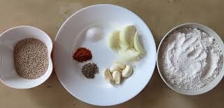

Chegodilu

Ingredients:
- Rice flour - 1 cup
- Water - 1 cup
- Urad dal (split black gram) - 1 tablespoon (soaked)
- Cumin seeds - 1 teaspoon
- Sesame seeds - 1 teaspoon
- Red chili powder - 1/2 teaspoon
- Asafoetida (hing) - a pinch
- Curry leaves - a few (chopped)
- Green chilies - 2 (finely chopped)
- Ghee - 1 tablespoon
- Salt - to taste
- Oil - for deep frying
Recipe:
- Heat water in a pan and bring it to a boil.
- Add salt and ghee to the boiling water.
- Reduce the heat and slowly add rice flour to the water while stirring continuously to avoid lumps.
- Cook the mixture until it forms a soft dough. Remove from heat and let it cool slightly.
- Add soaked urad dal, cumin seeds, sesame seeds, red chili powder, asafoetida, chopped curry leaves, and chopped green chilies to the dough. Mix well.
- Take small portions of the dough and roll them into thin cylindrical shapes, forming rings with tapered ends.
- Heat oil in a deep frying pan or kadai.
- Gently slide the shaped dough rings into the hot oil and fry them until golden brown and crispy.
- Remove the fried Chegodilu from the oil and drain excess oil on paper towels.
- Cool completely before storing in an airtight container.
- Serve Chegodilu as a crispy snack with tea or coffee. Enjoy!